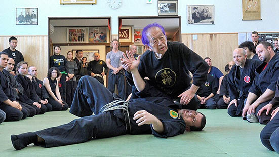

Le Bujinkan est une organisation internationale d'arts martiaux japonais fondée par Masaaki Hatsumi. Elle enseigne neuf écoles traditionnelles (ryūha) d'arts martiaux japonais, dont six écoles de samouraï et trois écoles de ninjutsu.
Notre enseignement au Pays Basque
Notre dojo à Hasparren perpétue cet enseignement authentique, transmettant les techniques millénaires dans le respect des traditions ancestrales du Japon féodal.
Disciplines enseignées
- Taijutsu : Combat à mains nues, frappes, projections
- BukiWaza : Maniement des armes traditionnelles (katana, bō, shuriken)
- Stratégies martiales : Tactiques des guerriers ninja et samouraï
- Self-défense : Applications modernes des techniques anciennes
Le Bujinkan se distingue par son approche complète et réaliste des arts martiaux, adaptée aux pratiquants de tous niveaux.